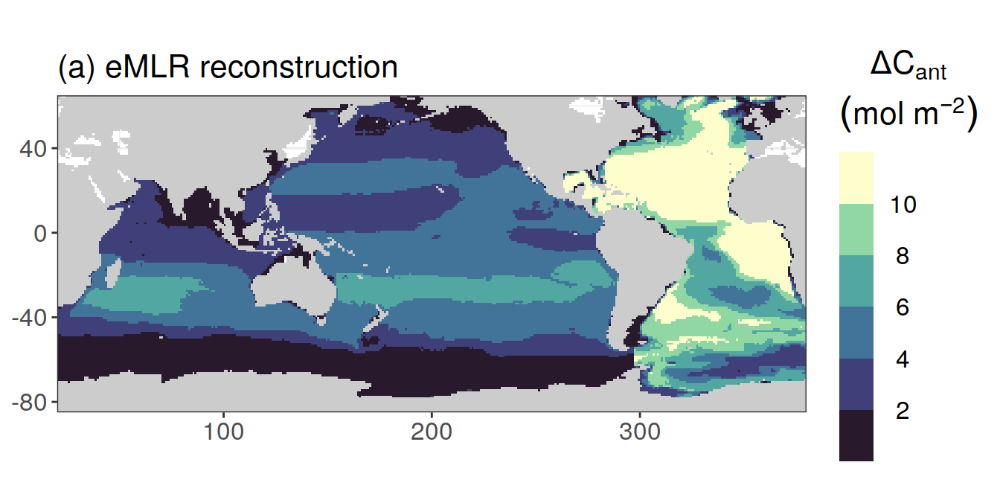

Last updated: 2021-06-30
Checks: 7 0
Knit directory: emlr_mod_analysis/
This reproducible R Markdown analysis was created with workflowr (version 1.6.2). The Checks tab describes the reproducibility checks that were applied when the results were created. The Past versions tab lists the development history.
Great! Since the R Markdown file has been committed to the Git repository, you know the exact version of the code that produced these results.
Great job! The global environment was empty. Objects defined in the global environment can affect the analysis in your R Markdown file in unknown ways. For reproduciblity it’s best to always run the code in an empty environment.
The command set.seed(20210225) was run prior to running the code in the R Markdown file. Setting a seed ensures that any results that rely on randomness, e.g. subsampling or permutations, are reproducible.
Great job! Recording the operating system, R version, and package versions is critical for reproducibility.
Nice! There were no cached chunks for this analysis, so you can be confident that you successfully produced the results during this run.
Great job! Using relative paths to the files within your workflowr project makes it easier to run your code on other machines.
Great! You are using Git for version control. Tracking code development and connecting the code version to the results is critical for reproducibility.
The results in this page were generated with repository version 9b099d1. See the Past versions tab to see a history of the changes made to the R Markdown and HTML files.
Note that you need to be careful to ensure that all relevant files for the analysis have been committed to Git prior to generating the results (you can use wflow_publish or wflow_git_commit). workflowr only checks the R Markdown file, but you know if there are other scripts or data files that it depends on. Below is the status of the Git repository when the results were generated:
Ignored files:
Ignored: .Rhistory
Ignored: .Rproj.user/
Note that any generated files, e.g. HTML, png, CSS, etc., are not included in this status report because it is ok for generated content to have uncommitted changes.
These are the previous versions of the repository in which changes were made to the R Markdown (analysis/relative_bias.Rmd) and HTML (docs/relative_bias.html) files. If you’ve configured a remote Git repository (see ?wflow_git_remote), click on the hyperlinks in the table below to view the files as they were in that past version.
| File | Version | Author | Date | Message |
|---|---|---|---|---|
| Rmd | 9b099d1 | Donghe-Zhu | 2021-06-30 | plot for relative bias |
| html | 1c92e08 | Donghe-Zhu | 2021-06-30 | Build site. |
| Rmd | 102d544 | Donghe-Zhu | 2021-06-30 | NorESM CESM relative bias |
# NorESM GV standard
path_version_data <- "/nfs/kryo/work/jenmueller/emlr_cant/model/data_donghe_ra/data_NorESM/v_XXX_GV_2021_2R_ann_standard/data/"
# # CESM GV standard
# path_version_data <- "/nfs/kryo/work/jenmueller/emlr_cant/model/data_donghe_ra/data_NorESM/v_XXX_GV_2021_2R_ann_standard_CESM/data/"
cant_inv_JDM <-
read_csv(paste(path_version_data,
"cant_inv.csv",
sep = ""))
cant_inv_M <-
read_csv(paste(path_version_data,
"cant_inv_M.csv", sep = ""))# add estimate label
cant_inv_long <- bind_rows(cant_inv_JDM %>% mutate(estimate = "JDM"),
cant_inv_M %>% mutate(estimate = "M"))
# pivot to wide format
cant_inv_wide <- cant_inv_long %>%
pivot_wider(names_from = estimate, values_from = cant_pos_inv:cant_inv) %>%
drop_na()
# calculate offset
cant_inv_wide <- cant_inv_wide %>%
mutate(
cant_pos_inv_offset = cant_pos_inv_JDM - cant_pos_inv_M,
cant_pos_inv_offset_relative = cant_pos_inv_offset / cant_pos_inv_M, # for relative bias
cant_inv_offset = cant_inv_JDM - cant_inv_M,
estimate = "JDM - M"
)
# restrict to the standard inventory depth
cant_inv_long <- cant_inv_long %>%
filter(inv_depth == params_global$inventory_depth_standard)
cant_inv_wide <- cant_inv_wide %>%
filter(inv_depth == params_global$inventory_depth_standard)i_eras <- "2000-2009 --> 2010-2019"
df1 <-
cant_inv_long %>% filter(estimate == unique(cant_inv_long$estimate)[1], eras == i_eras)
df2 <-
cant_inv_long %>% filter(estimate == unique(cant_inv_long$estimate)[2], eras == i_eras)
var = "cant_pos_inv"
breaks <- c(0,2,4,6,8,10,Inf) #relative bias NorESM
var <- sym(var)
breaks_n <- length(breaks) - 1
df1 <- df1 %>%
# mutate(lon = if_else(lon > 180, lon - 360, lon)) %>%
mutate(var_int = cut(!!var,
breaks,
right = FALSE))
df2 <- df2 %>%
# mutate(lon = if_else(lon > 180, lon - 360, lon)) %>%
mutate(var_int = cut(!!var,
breaks,
right = FALSE))
library(pals)
section <- map +
scale_fill_manual(
values = as.vector(ocean.deep(6)),
drop = FALSE,
name = expression(atop(Delta * C[ant],
(mol ~ m ^ {
-2
})))
) +
guides(fill = guide_colorsteps(barheight = unit(5.5, "cm"))) +
theme(
legend.text = element_text(size = 12.5),
legend.title = element_text(size = 16),
plot.subtitle = element_text(size = 16),
axis.text = element_text(size = 12.5)
)
a <- section +
geom_raster(data = df1,
aes(lon, lat, fill = var_int)) +
labs(subtitle = "(a) eMLR reconstruction")
a
| Version | Author | Date |
|---|---|---|
| 1c92e08 | Donghe-Zhu | 2021-06-30 |
b <- section +
geom_raster(data = df2,
aes(lon, lat, fill = var_int)) +
labs(subtitle = "(b) Model truth")
b
| Version | Author | Date |
|---|---|---|
| 1c92e08 | Donghe-Zhu | 2021-06-30 |
########## Offset
breaks <-
c(-Inf,-3,-2,-1, 0, 1, 2, 3, Inf) # relative bias NorESM
library(RColorBrewer)
section_o <- map +
scale_fill_manual(
values = colorRampPalette(brewer.pal(13, "RdBu"))(17)[c(16, 14, 12, 10, 8, 6, 4, 2)],
# name = expression(atop(Bias ~ Delta * C[ant],
# (mol ~ m ^ {
# -2
# }))),
name = "Relative Bias",
drop = FALSE
) +
theme(
legend.text = element_text(size = 12.5),
legend.title = element_text(size = 16),
plot.subtitle = element_text(size = 16),
axis.text = element_text(size = 12.5)
) +
guides(fill = guide_colorsteps(barheight = unit(5.5, "cm")))
c <- section_o +
geom_raster(data = cant_inv_wide %>% filter(eras == i_eras),
aes(lon, lat, fill = cut(
!!sym("cant_pos_inv_offset_relative"), breaks
))) +
labs(subtitle = "(c) Bias")
c
| Version | Author | Date |
|---|---|---|
| 1c92e08 | Donghe-Zhu | 2021-06-30 |
# NorESM GV standard
path_version_data <- "/nfs/kryo/work/jenmueller/emlr_cant/model/data_donghe_ra/data_NorESM/v_XXX_GV_2021_2R_ann_standard/data/"
# # CESM GV standard
# path_version_data <- "/nfs/kryo/work/jenmueller/emlr_cant/model/data_donghe_ra/data_NorESM/v_XXX_GV_2021_2R_ann_standard_CESM/data/"
cant_zonal_JDM <-
read_csv(paste(path_version_data,
"cant_zonal.csv",
sep = ""))
cant_zonal_JDM <- cant_zonal_JDM %>%
select(lat,
depth,
eras,
basin_AIP,
gamma_mean,
cant_mean,
cant_pos_mean,
cant_sd,
cant_pos_sd)
cant_zonal_M <-
read_csv(paste(path_version_data,
"cant_zonal_M", sep = ""))cant_zonal_JDM_gamma <- cant_zonal_JDM %>%
select(lat, depth, eras, basin_AIP, gamma_mean)
cant_zonal_M <- left_join(cant_zonal_JDM_gamma, cant_zonal_M)
rm(cant_zonal_JDM_gamma)
# add estimate label
cant_zonal_long <- bind_rows(cant_zonal_JDM %>% mutate(estimate = "JDM"),
cant_zonal_M %>% mutate(estimate = "M"))
# pivot to wide format
cant_zonal_wide <- cant_zonal_long %>%
pivot_wider(names_from = estimate, values_from = cant_mean:cant_pos_sd) %>%
drop_na()
# calculate offset
cant_zonal_wide <- cant_zonal_wide %>%
mutate(
cant_pos_mean_offset = cant_pos_mean_JDM - cant_pos_mean_M,
cant_pos_mean_offset_relative = if_else(
cant_pos_mean_M == 0,
NaN,
cant_pos_mean_offset / cant_pos_mean_M
), # relative bias
cant_mean_offset = cant_mean_JDM - cant_mean_M,
estimate = "JDM - M"
) %>%
drop_na()library(patchwork)
i_eras <- "2000-2009 --> 2010-2019"
i_basin_AIP <- "Atlantic"
# i_basin_AIP <- "Pacific"
# i_basin_AIP <- "Indian"
p_section_zonal <- function(df,
var = "cant_pos",
var_name = var,
col = "continuous",
gamma = "gamma_mean",
plot_slabs = "y",
drop_slabs = 1,
legend_title = expression(atop(Bias ~ Delta * C[ant, pos],
(mu * mol ~ kg ^ {
-1
}))),
subtitle_text = "") {
var <- sym(var)
gamma <- sym(gamma)
# plot base section
section <- df %>%
ggplot() +
guides(fill = guide_colorsteps(barheight = unit(5.5, "cm"))) +
scale_y_reverse() +
scale_x_continuous(breaks = seq(-100, 100, 20),
limits = c(-85, 85))
# plot layer for chose color scale (default continuous)
if (col == "continuous") {
section <- section +
geom_contour_filled(aes(lat, depth, z = !!var),
breaks = c(0, 1, 2, 3, 4, 5, 6, 7, 8, 9, 10, 11, 12, Inf)) +
scale_fill_manual(
values = as.vector(ocean.deep(13)),
drop = FALSE,
name = expression(atop(Delta * C[ant],
(mu * mol ~ kg ^ {
-1
})))
) +
theme(
axis.title = element_text(size = 16.5),
axis.text = element_text(size = 11.5),
legend.text = element_text(size = 11.5),
legend.title = element_text(size = 16.5)
)
} else {
section <- section +
# geom_contour_filled(aes(lat, depth, z = !!var),
# breaks = c(-Inf, -4, -3, -2, -1, 0, 1, 2, 3, 4, Inf)) +
geom_contour_filled(
aes(lat, depth, z = !!var),
breaks = c(-Inf, -2.5, -2, -1.5, -1, -0.5, 0, 0.5, 1, 1.5, 2, 2.5, Inf)
) +
scale_fill_manual(
values = colorRampPalette(brewer.pal(11, "RdBu"))(25)[c(24, 22, 20, 18, 16, 14, 12, 10, 8, 6, 4, 2)],
# values = colorRampPalette(brewer.pal(11, "RdBu"))(21)[c(20, 18, 16, 14, 12, 10, 8, 6, 4, 2)],
drop = FALSE,
name = "Relative Bias"
# name = expression(atop(Bias ~ Delta * C[ant],
# (mu * mol ~ kg ^ {
# -1
# })))
) +
theme(
axis.title = element_text(size = 16.5),
axis.text = element_text(size = 11.5),
legend.text = element_text(size = 11.5),
legend.title = element_text(size = 16.5)
)
}
# plot isoneutral density lines if chosen (default yes)
if (plot_slabs == "y") {
# select slab breaks for plotted basin
if (i_basin_AIP == "Atlantic") {
slab_breaks <- params_local$slabs_Atl
} else {
slab_breaks <- params_local$slabs_Ind_Pac
}
section <- section +
geom_hline(
yintercept = params_local$depth_min,
col = "white",
linetype = 2
) +
geom_contour(aes(lat, depth, z = !!gamma),
breaks = slab_breaks,
col = "black") +
geom_text_contour(
aes(lat, depth, z = !!gamma),
breaks = slab_breaks,
col = "black",
skip = drop_slabs
)
}
# cut surface water section
surface <-
section +
coord_cartesian(expand = 0,
ylim = c(500, 0)) +
labs(y = "Depth (m)",
subtitle = subtitle_text) +
theme(
axis.title.x = element_blank(),
axis.text.x = element_blank(),
axis.ticks.x = element_blank(),
plot.subtitle = element_text(size = 16.5)
)
# cut deep water section
deep <-
section +
coord_cartesian(expand = 0,
ylim = c(params_global$plotting_depth, 500)) +
labs(x = expression(Latitude ~ (degree * N)), y = "Depth (m)")
# combine surface and deep water section
surface / deep +
plot_layout(guides = "collect")
}
a <- p_section_zonal(
df = cant_zonal_long %>%
filter(
basin_AIP == i_basin_AIP,
estimate == unique(cant_zonal_long$estimate)[1],
eras == i_eras
),
var = "cant_pos_mean",
subtitle_text = "(a) eMLR reconstruction Atl"
#subtitle_text = "(c) Indian"
#subtitle_text = "(a) VIF: 50 M: 10 Indian"
# subtitle_text = "(a) Standard"
)
a
| Version | Author | Date |
|---|---|---|
| 1c92e08 | Donghe-Zhu | 2021-06-30 |
#ggsave("c.png", width = 5.4, height = 3.65)
b <- p_section_zonal(
df = cant_zonal_long %>%
filter(
basin_AIP == i_basin_AIP,
estimate == unique(cant_zonal_long$estimate)[2],
eras == i_eras
),
var = "cant_pos_mean",
subtitle_text = "(b) Model truth"
#subtitle_text = "(b) "
)
b
| Version | Author | Date |
|---|---|---|
| 1c92e08 | Donghe-Zhu | 2021-06-30 |
# ggsave("f.png", width = 5.4, height = 3.65)
########### Offset
i_basin_AIP <- "Atlantic"
# i_basin_AIP <- "Pacific"
# i_basin_AIP <- "Indian"
p_section_zonal(
df = cant_zonal_wide %>%
filter(basin_AIP == i_basin_AIP,
eras == i_eras),
var = "cant_pos_mean_offset_relative",
col = "divergent",
#subtitle_text = "(a) NorESM Atlantic"
#subtitle_text = "(j) Modified + Overlapped"
#subtitle_text = "(g) VIF: 10 M: 10 "
subtitle_text = "(c) Atlantic"
#subtitle_text = "(f) "
)
| Version | Author | Date |
|---|---|---|
| 1c92e08 | Donghe-Zhu | 2021-06-30 |
# ggsave("b1.png", width = 5.4, height = 3.65)cant_JDM <-
read_csv(paste(path_version_data,
"cant_3d.csv", sep = "")) %>%
select(lon, lat, depth, eras, basin_AIP, cant_JDM = cant_pos, gamma, gamma_slab)
cant_M <-
read_csv(paste(path_version_data,
"cant_M.csv", sep = "")) %>%
select(lon, lat, depth, eras, basin_AIP, cant_M = cant_pos)
cant_relative_bias <- left_join(cant_JDM, cant_M) %>%
mutate(cant_pos_bias_relative = if_else(cant_M == 0, NaN, (cant_JDM - cant_M)/cant_M)) %>%
drop_na() %>%
arrange(cant_pos_bias_relative)
# map +
# geom_raster(data = cant_relative_bias %>% filter(is.na(cant_pos_bias_relative)), aes(lon, lat, fill = "red"))
m_zonal_mean_section_relative <- function(df) {
df <- df %>%
fselect(lat, depth, eras, basin_AIP, cant_pos_bias_relative, gamma) %>%
fgroup_by(lat, depth, eras, basin_AIP) %>% {
add_vars(fgroup_vars(.,"unique"),
fmean(., keep.group_vars = FALSE) %>% add_stub(pre = FALSE, "_mean"),
fsd(., keep.group_vars = FALSE) %>% add_stub(pre = FALSE, "_sd"))
}
return(df)
}
cant_zonal_relative_bias <- m_zonal_mean_section_relative(cant_relative_bias)
cant_zonal_relative_bias <- m_cut_gamma(cant_zonal_relative_bias, "gamma_mean")library(patchwork)
i_eras <- "2000-2009 --> 2010-2019"
p_section_zonal <- function(df,
var = "cant_pos",
var_name = var,
col = "continuous",
gamma = "gamma_mean",
plot_slabs = "y",
drop_slabs = 1,
legend_title = expression(atop(Bias~Delta * C[ant,pos],
(mu * mol ~ kg ^ {-1}))),
subtitle_text = "") {
var <- sym(var)
gamma <- sym(gamma)
# plot base section
section <- df %>%
ggplot() +
guides(fill = guide_colorsteps(barheight = unit(6.5, "cm"))) +
scale_y_reverse() +
scale_x_continuous(breaks = seq(-100, 100, 20),
limits = c(-85,85))
# plot layer for chose color scale (default continuous)
if (col == "continuous") {
section <- section +
geom_contour_filled(aes(lat, depth, z = !!var),
breaks = c(0,1,2,3,4,5,6,7,8,9,10,11,12,Inf)) +
scale_fill_manual(values=as.vector(ocean.deep(13)),
drop = FALSE,
name = expression(atop(Delta*C[ant],
(mu * mol ~ kg ^ {-1})))) +
theme(
axis.title = element_text(size = 16.5),
axis.text = element_text(size = 11.5),
legend.text = element_text(size = 11.5),
legend.title = element_text(size = 16.5))
} else {
section <- section +
# geom_contour_filled(aes(lat, depth, z = !!var),
# breaks = c(-Inf, -4, -3, -2, -1, 0, 1, 2, 3, 4, Inf)) +
geom_contour_filled(aes(lat, depth, z = !!var),
breaks = seq(-1, 1, 0.1)) +
scale_fill_manual(
values = colorRampPalette(brewer.pal(11, "RdBu"))(41)[c(40,38,36,34,32,30,28,26,24,22,20,18,16,14,12,10,8,6,4,2)],
# values = colorRampPalette(brewer.pal(11, "RdBu"))(21)[c(20, 18, 16, 14, 12, 10, 8, 6, 4, 2)],
drop = FALSE,
name = "Relative Bias"
) +
theme(
axis.title = element_text(size = 16.5),
axis.text = element_text(size = 11.5),
legend.text = element_text(size = 11.5),
legend.title = element_text(size = 16.5))
}
# plot isoneutral density lines if chosen (default yes)
if (plot_slabs == "y") {
# select slab breaks for plotted basin
if (i_basin_AIP == "Atlantic") {
slab_breaks <- params_local$slabs_Atl
} else {
slab_breaks <- params_local$slabs_Ind_Pac
}
section <- section +
geom_hline(yintercept = params_local$depth_min,
col = "white",
linetype = 2) +
geom_contour(aes(lat, depth, z = !!gamma),
breaks = slab_breaks,
col = "black") +
geom_text_contour(
aes(lat, depth, z = !!gamma),
breaks = slab_breaks,
col = "black",
skip = drop_slabs
)
}
# cut surface water section
surface <-
section +
coord_cartesian(
expand = 0,
ylim = c(500, 0)
) +
labs(y = "Depth (m)",
subtitle = subtitle_text) +
theme(
axis.title.x = element_blank(),
axis.text.x = element_blank(),
axis.ticks.x = element_blank(),
plot.subtitle=element_text(size = 16.5)
)
# cut deep water section
deep <-
section +
coord_cartesian(
expand = 0,
ylim = c(params_global$plotting_depth, 500)
) +
labs(x = expression(Latitude~(degree*N)), y = "Depth (m)")
# combine surface and deep water section
surface / deep +
plot_layout(guides = "collect")
}
########### relative Offset
i_basin_AIP <- "Atlantic"
# i_basin_AIP <- "Pacific"
# i_basin_AIP <- "Indian"
p_section_zonal(
df = cant_zonal_relative_bias %>%
filter(basin_AIP == i_basin_AIP,
eras == i_eras),
var = "cant_pos_bias_relative_mean",
col = "divergent",
subtitle_text = "(a) NorESM Atlantic"
#subtitle_text = "(j) Modified + Overlapped"
#subtitle_text = "(g) VIF: 10 M: 10 "
#subtitle_text = "(b) Pacific"
#subtitle_text = "(c) "
)
| Version | Author | Date |
|---|---|---|
| 1c92e08 | Donghe-Zhu | 2021-06-30 |
# ggsave("b.png", width = 5.4, height = 3.65)
sessionInfo()R version 4.0.3 (2020-10-10)
Platform: x86_64-pc-linux-gnu (64-bit)
Running under: openSUSE Leap 15.2
Matrix products: default
BLAS: /usr/local/R-4.0.3/lib64/R/lib/libRblas.so
LAPACK: /usr/local/R-4.0.3/lib64/R/lib/libRlapack.so
locale:
[1] LC_CTYPE=en_US.UTF-8 LC_NUMERIC=C
[3] LC_TIME=en_US.UTF-8 LC_COLLATE=en_US.UTF-8
[5] LC_MONETARY=en_US.UTF-8 LC_MESSAGES=en_US.UTF-8
[7] LC_PAPER=en_US.UTF-8 LC_NAME=C
[9] LC_ADDRESS=C LC_TELEPHONE=C
[11] LC_MEASUREMENT=en_US.UTF-8 LC_IDENTIFICATION=C
attached base packages:
[1] stats graphics grDevices utils datasets methods base
other attached packages:
[1] RColorBrewer_1.1-2 pals_1.6 gt_0.2.2 marelac_2.1.10
[5] shape_1.4.5 scales_1.1.1 metR_0.9.0 scico_1.2.0
[9] patchwork_1.1.1 collapse_1.5.0 forcats_0.5.0 stringr_1.4.0
[13] dplyr_1.0.5 purrr_0.3.4 readr_1.4.0 tidyr_1.1.2
[17] tibble_3.0.4 ggplot2_3.3.3 tidyverse_1.3.0 workflowr_1.6.2
loaded via a namespace (and not attached):
[1] fs_1.5.0 sf_0.9-8 lubridate_1.7.9
[4] gsw_1.0-5 httr_1.4.2 rprojroot_2.0.2
[7] tools_4.0.3 backports_1.1.10 R6_2.5.0
[10] KernSmooth_2.23-18 DBI_1.1.0 colorspace_2.0-0
[13] withr_2.3.0 tidyselect_1.1.0 compiler_4.0.3
[16] git2r_0.27.1 cli_2.2.0 rvest_0.3.6
[19] xml2_1.3.2 isoband_0.2.3 labeling_0.4.2
[22] checkmate_2.0.0 classInt_0.4-3 digest_0.6.27
[25] rmarkdown_2.5 oce_1.3-0 dichromat_2.0-0
[28] pkgconfig_2.0.3 htmltools_0.5.0 maps_3.3.0
[31] dbplyr_1.4.4 rlang_0.4.10 readxl_1.3.1
[34] rstudioapi_0.13 farver_2.0.3 generics_0.1.0
[37] jsonlite_1.7.2 magrittr_2.0.1 Matrix_1.2-18
[40] Rcpp_1.0.5 munsell_0.5.0 fansi_0.4.1
[43] lifecycle_1.0.0 stringi_1.5.3 whisker_0.4
[46] yaml_2.2.1 plyr_1.8.6 grid_4.0.3
[49] blob_1.2.1 parallel_4.0.3 promises_1.1.1
[52] crayon_1.3.4 lattice_0.20-41 haven_2.3.1
[55] mapproj_1.2.7 hms_0.5.3 seacarb_3.2.15
[58] knitr_1.30 pillar_1.4.7 reprex_0.3.0
[61] glue_1.4.2 evaluate_0.14 RcppArmadillo_0.10.1.2.2
[64] data.table_1.13.6 modelr_0.1.8 vctrs_0.3.6
[67] httpuv_1.5.4 testthat_3.0.1 cellranger_1.1.0
[70] gtable_0.3.0 assertthat_0.2.1 xfun_0.20
[73] broom_0.7.5 RcppEigen_0.3.3.9.1 e1071_1.7-4
[76] later_1.1.0.1 class_7.3-17 memoise_1.1.0
[79] units_0.6-7 ellipsis_0.3.1